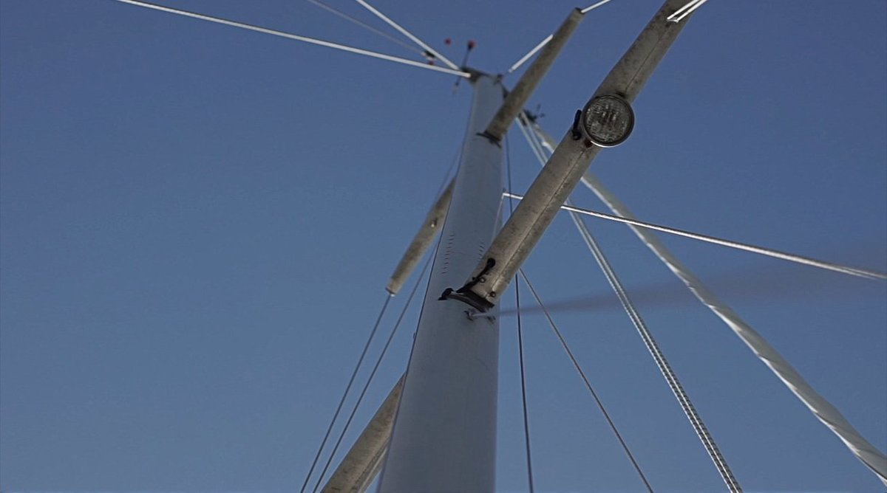
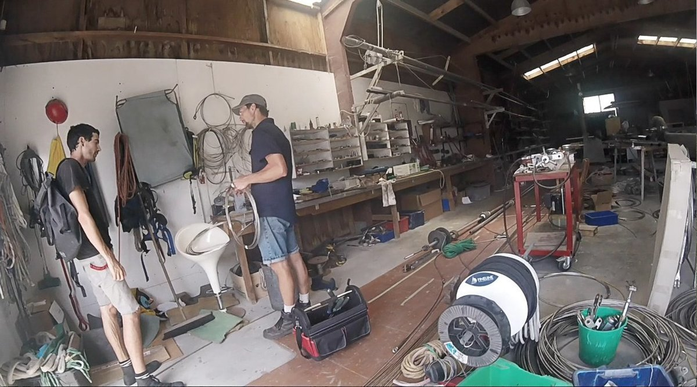
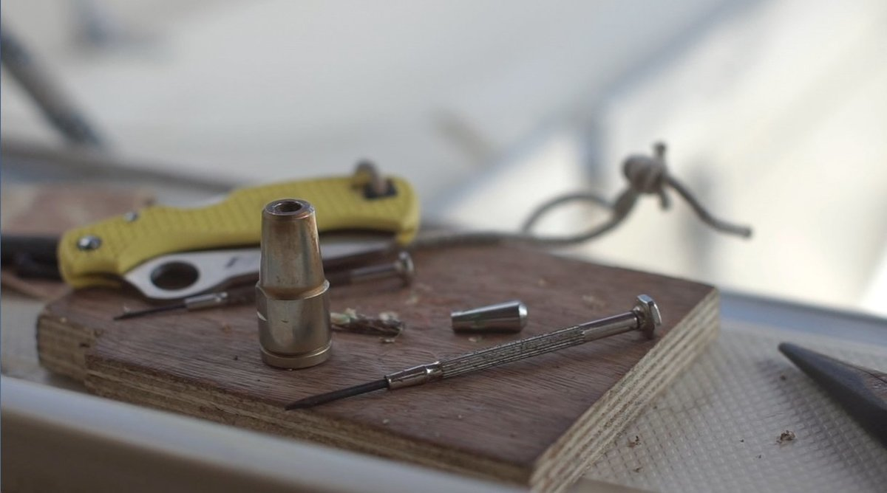
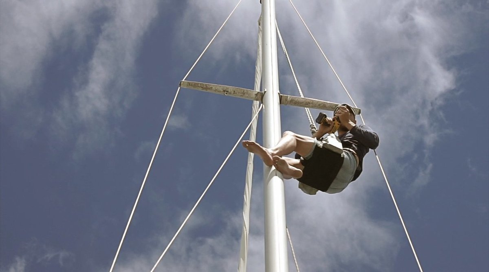
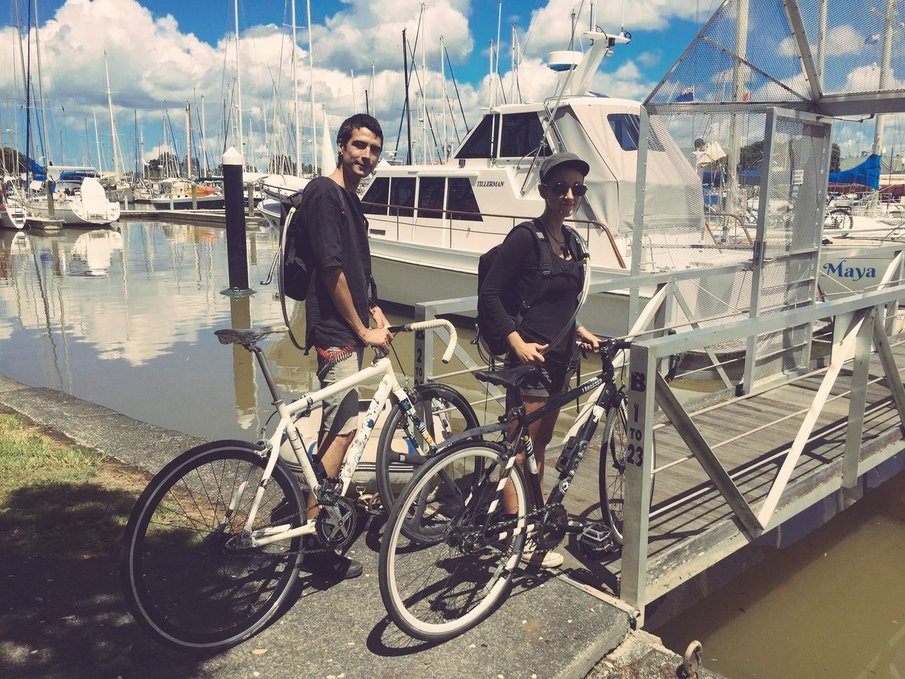
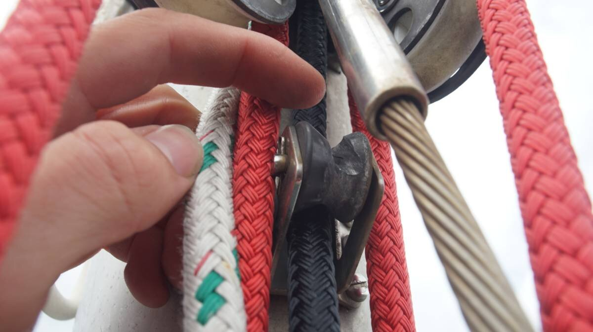
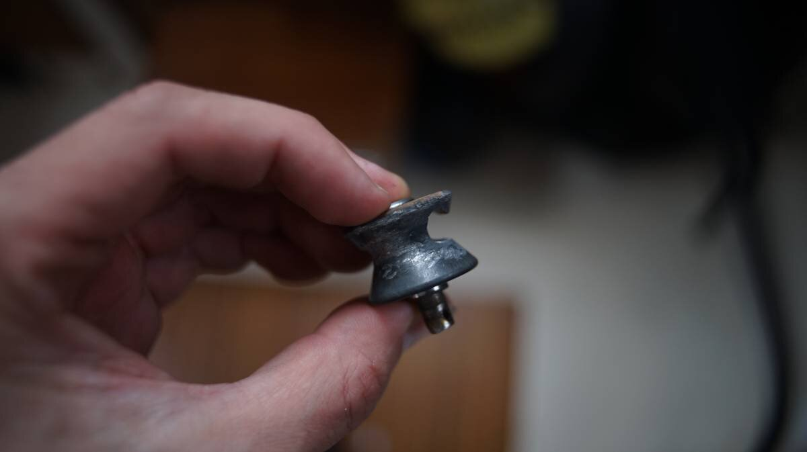
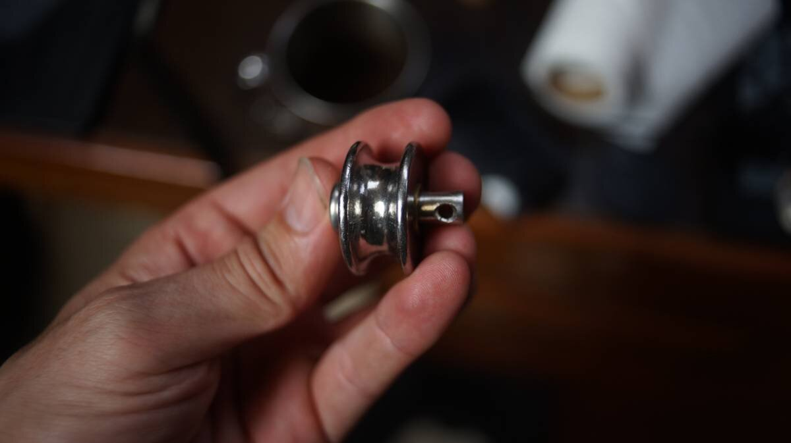

standing rigging replacement
2018.03.18
Whangarei, New Zealand
Click below dates for more recent updates:
While in Tonga, our friend Alex came over to talk to us, and standing in his dinghy from the water, noticed a cut in our port side intermediate shroud. An intermediate shroud is one of many wires that are holding up the mast. This one, leads above the second spreader (a spar that deflects the shrouds) on the side of the mast. Our boat has two sets of spreaders, because we have a very tall mast — not everyone has intermediate shrouds. The cut was just near the lock (the part that squeezes, and connects the wire to the turnbuckle), a single cut in one of the strands. This was bad news. We had it fixed, temporarily, cutting the wire and adding a second turnbuckle — with Herbert's help (thank you sensei). We needed to fix this, and while in Whangarei, thought we'd replace the port side intermediate and the backstay (a wire from the mast that leads to the back of the boat) as well.
We removed our intermediate shrouds, securing the mast with halyards (lines used to hoist sails up) on both sides, our mast is keel-stepped though, meaning that it goes through the deck and goes inside the cabin. We coiled the wires up, and carried them to C-spar at Dockland 5 by bike.
Daniel, a rigger and friend, was kind enough to deliver the new wires, since he was in the area. We found out later that Daniel was husband to Laura Dekker, funny, since S/V Guppy sat diagonally to us on the pile moorings (this was the same year the boat sank in the Pacific :<).
The issue with replacing the intermediate shrouds though, was that the T-terminals they had were too big to fit in the backing plates of our mast. A t-terminal is a piece at the top or end of the wire, shaped like a T (as the name suggests), that fits into a backing plate that is attached in your mast with rivets (a permanent mechanical fastener). The backing plate is in a hole, in your mast, and has a little elongated slot for the T to fit into, it fits at an angle and when turned the little arms of the T keep it in place.
Daniel came over to take a look, and ended up drilling the rivets out of the starboard side backing plate to get it out, so they could see how to fit the terminals into them back in the shop. The T-terminals were shaved down slightly, and the hole in the backing plate was made bigger, with much care, using a drill and bit.
The backing plate was installed again, but it took some time before we could do that. We needed an air compressor, to use a gun to get them back on there. As it turns out, our rivets are big, and doing it by hand is near impossible - on a pile mooring, there was no way to power that compressor. We waited till our haul out to do it, since C-spar was at that yard, and that they could bring the compressor there to do it. This is what happened. Daniel climbed up the mast while the boat was on hardstand, this wasn't our idea, but then again, the cradles were made strong, better than how they do it in BC. It seemed safe enough, there was little chance that the boat would tip over. It's always better to go up the mast while in the water, since the boat has righting ability, and won't risk tipping.
Once the backing plate was back in, I hauled Devine up the mast (when back in the Town basin), and he widened the backing plate, same as the other one. This was tricky, because our drill has a cord. We connected the drill to a long extension, and then to the generator on deck. We were able to replace both intermediate shrouds then. We had to do this quickly, because Devine had trouble holding the weight of the drill, and the whole length of the extension aloft.
The backstay was easier to do, but was heavier to carry by bike. The new wire would be lighter, without the insulated part. Our other wires, we deemed good enough. No cuts. We'd wait until our return to BC to replace them with the running rigging.
Takeaway: Re-doing your rigging at a dock is much easier, much, much easier. Having access to shore power would have been handy. I bought norseman cones online from Rig-rite, had them shipped from the US for way too much money. Avoid rig-rite if you can, their customer service is terrible and they'll charge you crazy high fees to ship the part without warning you of it. Glad I bought more cones than we needed though, when it comes time to replace the other cables we'll have them on hand already.
2X Intermediates + swaging 214
Backstay + swaging 186$
Norseman cones 100$
2024.04.26
Victoria, B.C. Canada
We are getting ready for our departure to Southeast Alaska, in preparation for this trip we changed the jib halyard. The jib halward was wire to rope(see metal halyard swaging), we changed it to all-rope.
Making the switch from a wire to a rope halyard may mean having to change the sheave at the top, which might be shaped to only accomodate a wire. So, we took a trip up the mast to get a good look at our sheaves, to see if we had to replace them.
Pino's jib halyard has a sheave that is hidden in the masthead, from what we could see it seemed like it was designed to accomodate both and it wasn't damaged (we'd have to dissassemble the masthead to get it out). Then, there's another sheave a bit lower on the mast that acts as a lead, and possibly a way to keep tension(feel free to correct us on this) for the furling connection.
The sheave on the lead was very close to breaking in half. The wire rope had eaten through most of it.
We bought a new SS block and cannibalized its sheave as a replacement (as it turns out, buying a sheave alone was more expensive than doing that).
Because the weather was kind we got to replace the sheave at the top of the mast on the same day that we took it off. It is very rare for us to go up the mast twice in the same day.